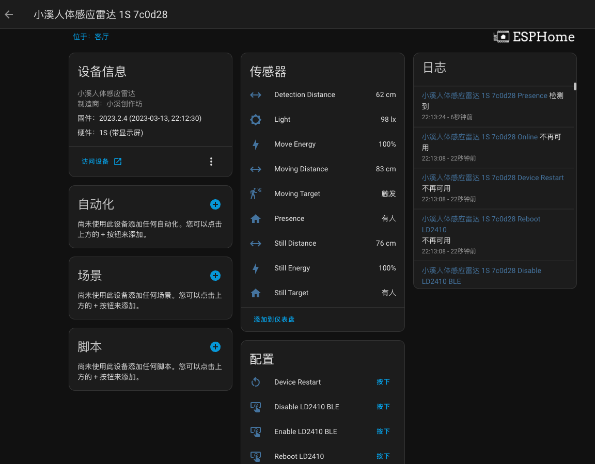
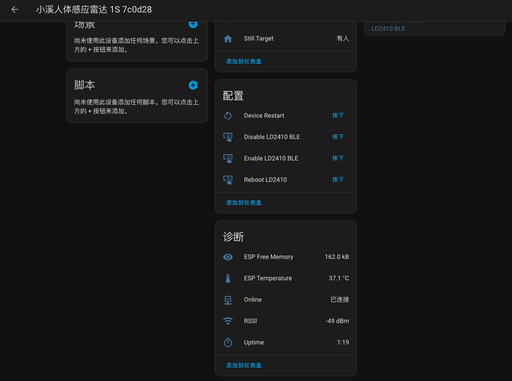
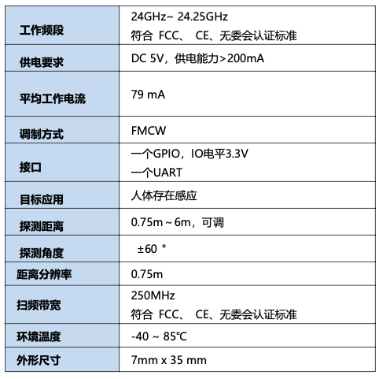

介绍
这是一款专门为HomeAssistant定制的人体24G雷达传感器，基于ESPHome固件定制，使用WIFI连接，采用通用的TYPE-C USB供电。
HA界面~
设备接入后，HomeAssistant中的控制界面如下：
固件版本
信息和固件版本有关系，如果你的界面和这里显示的不一样，请核对固件的版本时间。


新功能~
光感功能~
全新推出
新固件提供光感获取，采集雷达前面板的光线值！值范围是0到255。
产品特色~
- WIFI直连，不需要任何网关。
- 使用ESP32-C3作为通信芯片，射频能力优秀，发热量低。
- ESPHome直接接入，只要完成配网之后，就直接可以在HomeAssistant中搜索设备。
- 1S版带有显示屏，能够直观的显示雷达工作状态，了解运行情况。
版本区别
1W版除了没有显示屏之外，功能和1S是一样的。
高级特色~
- Type-C口除了作为供电，也能作为配网和恢复固件用。
- 能够插入电脑使用网页版的ESPHome Web Tools来查看运行日志。
产品参数~
雷达性能~
